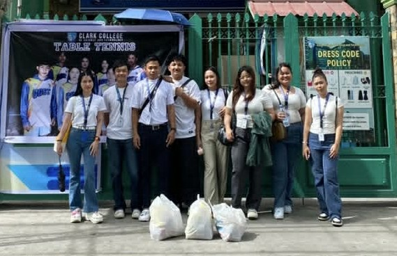

As part of my Civic Welfare Training Service (CWTS), I actively participated in community service initiatives in the Dau community. This experience allowed me to contribute to local welfare efforts and develop a deeper understanding of community needs and social responsibility.

- Provided direct assistance to community members in need
- Participated in local welfare programs and support activities
- Collaborated with fellow volunteers to organize community events
- Developed empathy and leadership skills through hands-on service
- Contributed to improving the quality of life in the Dau community